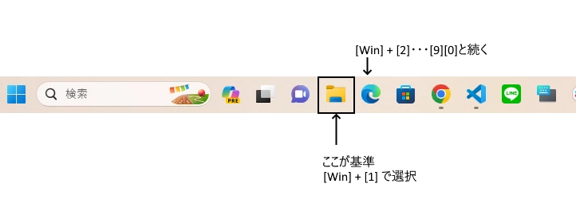
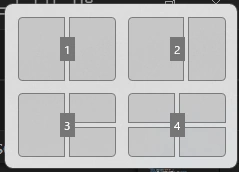
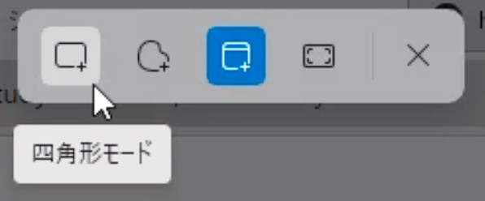
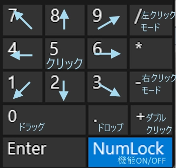

Windows11
[Win] + [0]～[9]
タスクバーのアプリを左から順に選択

エクスプローラーの位置が基準になっている
[alt] + [F4]
現在開いているアプリを閉じる
[Win] + [shift] + [T]
通知を閉じる
[Win] + [Z] + [1]～[4]
画面分割にする

[Win] + [Z] で画面分割の表示が右上に出るので[1]～[4]を選択する
[Win] + [shift] + [S]
スクリーンショット

範囲を選択すると選択した範囲がスクリーンショットされる
[Win] + [ctrl] + [O(オー)]
キーボードの表示（オン／オフ）
[Alt] + [shift(左)] + [NumLock]
テンキーのマウス化

終了する際はNumLockキーを再度押す